GRID11:11
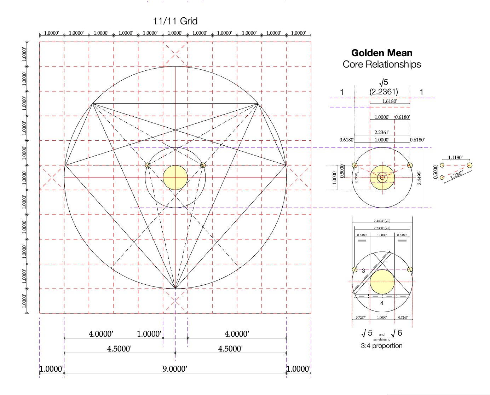
11:11 GRID SUPERIMPOSITION
The Tetra-Wave "Footprint" can be perfectly superimposed onto an orthogonal
2-dimensional Grid with an 11:11 ratio...
where each grid square equals the core diameter of "1".
This then results in a overall Diameter of the waveform perimeter as 9 Grid Squares. Amazingly, the centroids of each TOT Pair are in a PHI relationship to each other along the vector lines tangent to the Core equaling the golden mean ratio of1.6180.
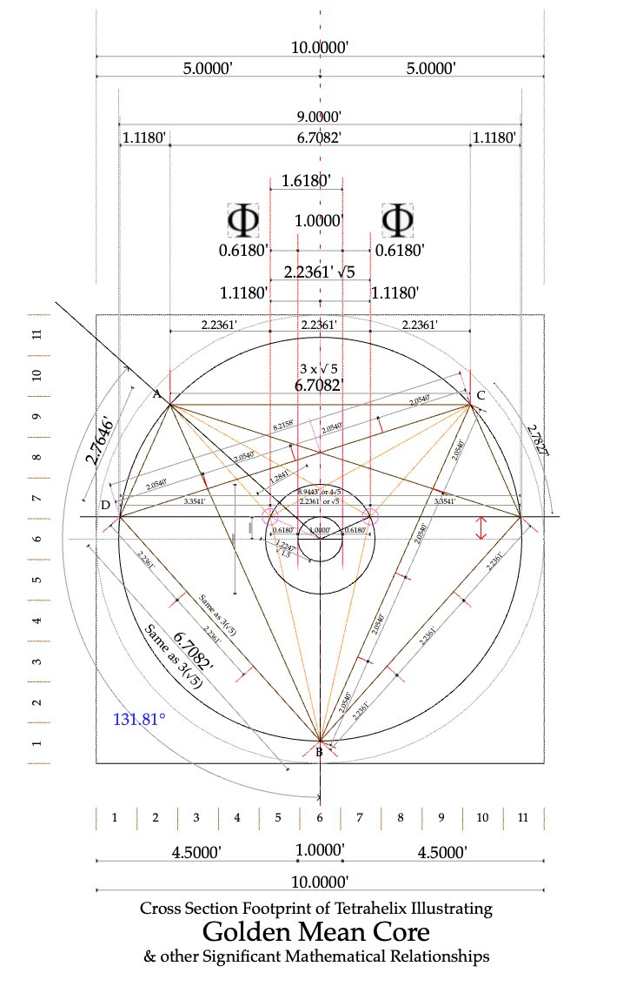
The actual shape of the core at any given "location-moment" along the vertical axis is a "Vesica" shaped envelope.
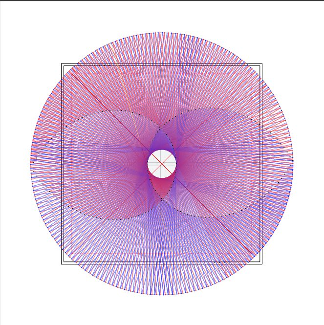
Cross-section 90º to vertical axisthrough Tetra-Waveform of 20 TOTs
The Core channel "appears" circular when viewed "down the barrel" through the many Vector lines that pass through the Centroids of each pair boded TOT. These vector lines area also the axis of each pair bonded TOT.
The actual shape of the core at any given "location-moment" along the vertical axis is a "Vesica" shaped envelope.
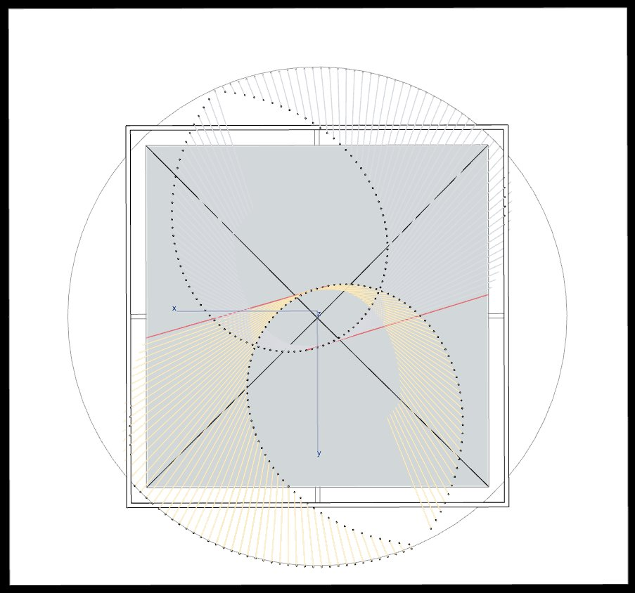
The sequence of photos below show the progression of elements that create the twin Hypar fields of the Tetra-WaveForm. This sculpture is only a static structure, a "Snapshot" as it were, of the more dynamic and complex rotating geometry of the Tetra-WaveForm energy formation alluded to in the StarGate Poems. The Illuminated core is a Vesica Pisces shaped "Envelope" formed between the Hypar EM fields of the WaveForm, within the spin radius of the Centroidal Vectors.
(Note: This Vesica Pisces shape of the "Core Conduit" is not the same as the typical Sacred Geometry Vesica Pisces typically formed by constructing 2 overlapping circles the origin of each being on the perimeter of the other. This is explained in another section.
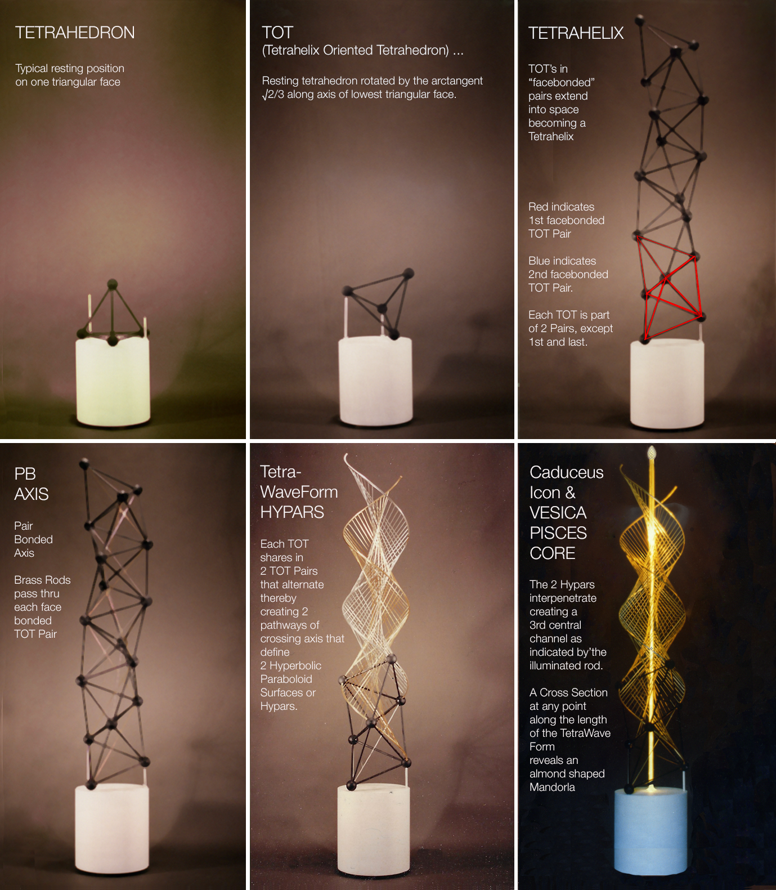
What is a TOT?
A "Tetra-Helically Oriented Tetrahedron"
The top center photo represents a TOT. It is a tetrahedron tilted around the median of the base triangle such that all the vertices of the tetrahedron are vertically equidistant. TOTs can be face-bonded in sequence so that they extend into space and create a "Regular Tetrahelix "around a common central axis. Since all vertices of a tetrahelix lay on the surface of the same cylinder they are the same radial distance from the central axis. This central axis however DOES NOT pass through the (centroids) of any if the tetrahedrons, it is offset slightly by 1/2 the diameter of the inner core circle defined by the rotation of the tangential Centroidal Vectors. Each TOT or Pair of "face-bonded' tetrahedrons share a common triangular face. That face is tilted at a specific angle...which if calculated is the ArcTangent √2/3.
Note 1: The Centroidal Vectors between TOT Pairs when extended are co-linear with the overall axis of each TOT Pair connecting between the furthest opposite vertices of each TOT pair. These vectors should be thought of as resultant forces between virtual particles.
Note 2: The Tetrahelix Chiral and Enantiomorphic, exhibiting either a right-hand twist or a left-hand twist. The position of the 4th Tetrahedron relative to the 3rd determines the spin direction. Up until that 4th Tetrahedron... the previous triplet of 3 TOTS is spin neutral.

Biblical
"Tetra-Morphs"
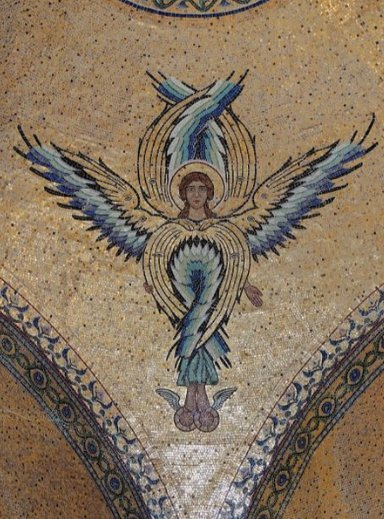
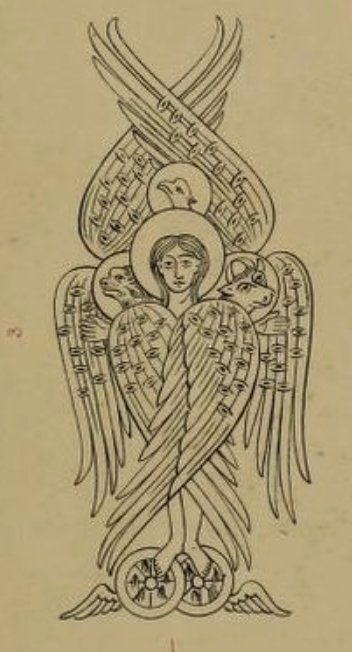
5
Biblical
Flying Rings
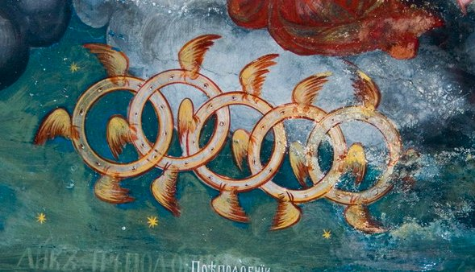
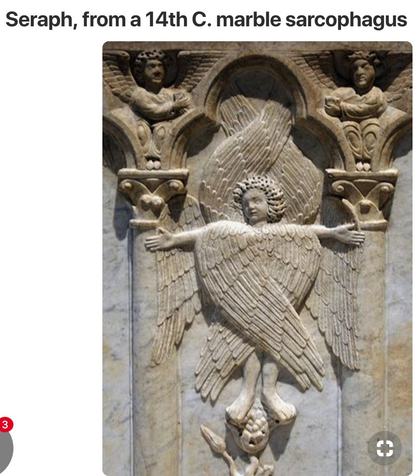
Stargate Movie
5
"Transport Rings"
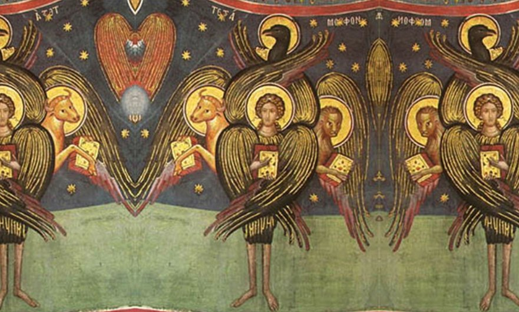
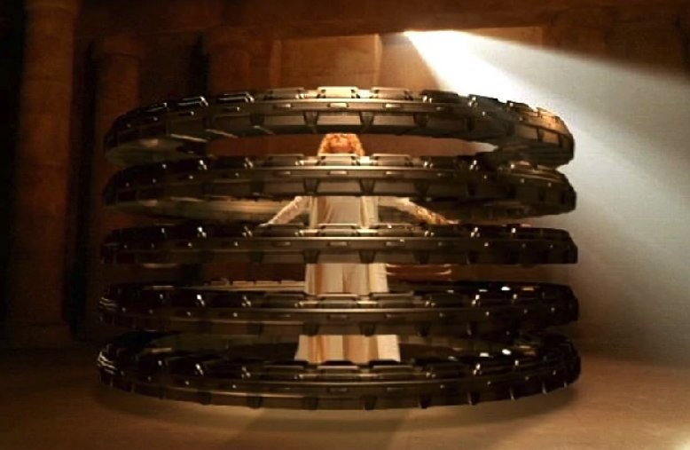
3D CAD Modeling of the Tetra-Waveform within the TetraHelix framework.
The WaveForm is generated by the Pair Bonded Axis of each TOT Pair, and is co-linear with the shorter Centroidal vectors.
The Vertical Tetrahelix Axis is shown in the right image as the white core, although its shape in 2D is not circular but rather another type of helix that varies in diameter form an inner mean to an outer mean as defined by the TOT pair axis.
1995-2015
The First Five "Ring Planes"
imaginary "Rings" can be hypothesized around the cylindrical surface vertically equidistant at height of each TOT Pair vertex. These Rings could serve as a means of stabilizing the dynamics of a rotational Waveform. The rings would support the first 3 TOTs and ensure equilibrium of the Waveform around the central core.
It is intriguing to note that a Similar Set of 5 Rings can be speculated as existing somehow, within or co-planar with the polished under-surfaces of the 5 equally spaced Granite Beams comprising the roof Super-structure of the King's Chamber at the Pyramid of Giza. This observation is made in conjunction with the potential Resonance Angle of the Vectors with the slope angle of the Pyramid as described in the section on Megaliths.
The use of 5 rings is also seen with certain Biblical "flying tetra-morphs", and are of course also a high tech device in the well known 5 stacked rings of the "Transporter" in the Stargate Movie.
The Symmetry of the Hypar Waveforms are shown below....They are actually the same waveform with one displaced "vertically" in time/space by the proportions of 1 TOT. I am showing them both individually, separated to the sides, and co-joined in the center as they would be as generated, interpenetrating each other becoming one Waveform.
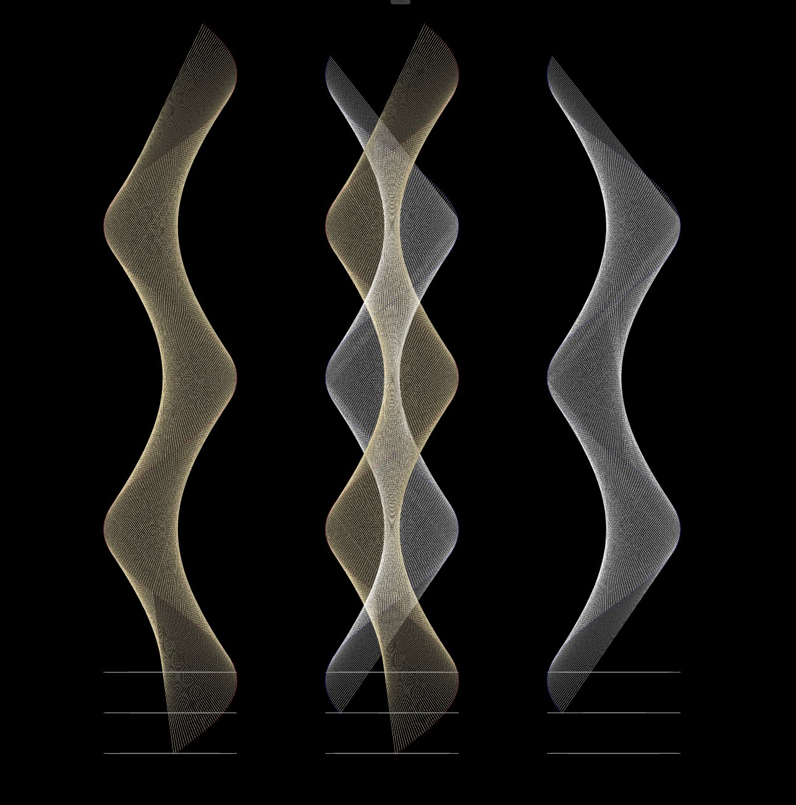
Two Interpenetrated Hypar Fields
Create a 3rd Inner Core "Vesica Pisce" Channel
or "Middle Pillar"
The Twin Waveforms AND the Core Channel (shown In yellow below), emerge at the same time as TOT Pairs rotate in a self-referential sequence progressing thru space along the central axis as the "Phasing of the Tetrahelix Framework...It is a "TRINITY" of topological surfaces that can only exist as a single dynamic event.
In cross-section the Core Conduit "Channel" can be understood as an alternative idea for the Christ Mandorla, the Vesica-Pisces, or the Nimbus of traditional Sacred Geometry.
Interestingly the core shape is much like a "Bladder" which is what Vesica means.
In addition a Cross-Section cut thru the Twin Hypar Standing Waveforms to either side of the Core Conduit, when seen in its 2D flat representation reveals shapes reminiscent of the Ajna Chakra Symbol or the Yin-Yang Symbol.
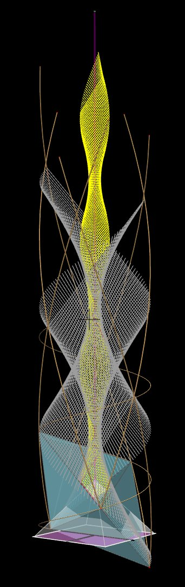
Plan View Cross-Section Cut through Tetra-Waveform
90º to vertical axis.
The core "appears" circular due to the spatially diagonal Centroidal Vector lines being Tangent to the Core at the same distance from the Axis. The actual shape of the core at any given location on the axis is a "Vesica" shape of the Core envelope, or boundary, has a ratio of approximately 1 : 2.45
Because the TOT Centroids and their vectors are offset from the axial center of the cylinder by 1/2 of 1/10th, they do not pass through the center of the wavefor. They are tangent to the vesica core. The centroids are in relation to the core as a proportion of the Golden Mean Ratio, or PHI.
This is perhaps why the true center of any spiral of flowers, seeds or leaves exhibiting the Golden Mean Ratio can never be found even at the smallest scales. Each growth center is relative to the last, but as the angle of tangents relative to each other as they rotate thru both Space & Time.
In this sense, the so called "Phi-Angle" of 137.5º is an artifact of a process that extends forward and backward in time as well as space... it is the Tetrawave's Centroidal Rotation Angle of 131.81º diagonally extended in space... OVER TIME... that generates the 2D illusion of the 137.5º angle.
The Angle between the offsets of each successive Tangential Centroidal Vector approximates 137º relative to the "Apparent Circular Core" of 1.
It is interesting to note that Fine Structure Constant of the Universe is 1/137, the same ratio of Core Diameter to the Relative Vector angles. Is there a correlation here?
Plan View - Cross Section
Plan View of the first TOT-Pair of a Tetrahelix showing centroid locations
of each TOT prior to rotation/progression. This superimposed cross section shows the
projected Edges, Centroidal Bond Vector & TOT Pair Axis.
Significant mathematical relationships emerge including the Golden Mean Core & √5 ratio. The √2 & √3 are the relations between square, triangle and circle.
The arctangent √2/3 is the angle of tilt for the orientation of the first triangular face of a TOT. This was difficult to determine initially until I understood the cylindrical morphology of the Tetrahelix is radial and as such, ALL vertices lie on the surface of a that cylinder that all the vertices define.
(See geometric study models under index "Tetrahedron to Tetra-Waveform".
The TetraWave geometry also corresponds precisely to the Egyptian 11:11 Grid and radially to octagonally rotated structures such as the Dome of the Rock and most grid based sacred architecture.
The dimensions of this footprint illustration reference a core unit-circle radius equal to 1.
The largest gray circle is congruent with the 11:11 Grid (Egyptian Geometry Reference)
and is the Circular Perimeter of a Tetrahedron resting flat on one Face.
The larger black circle is the cylindrical envelope of the Tetrahelix.
The smallest black circle is the tangent of core at narrowest point.
The smaller intermediate circle is the orbit of the centroids in each TOT.
The very small 2 red circles are the Centroids of each TOT.
The Bond Vector distance is √5... and is in a PHI ratio relative to the Core Diameter.
The Bond Vectors are tangent to the core (smallest circle),
and they define & generate the core by the circum-rotation of these vectors
as the TOT Pairs progress in space, individually or as a chain of TOTs.

Core Flow Channel thru Linear TetraCrystal


Core Flow & Centroidal Paths correspond twith DNA Helix

TOT Centroids shown as red & blue beads around Hypar Core within Tetrahelix Frame
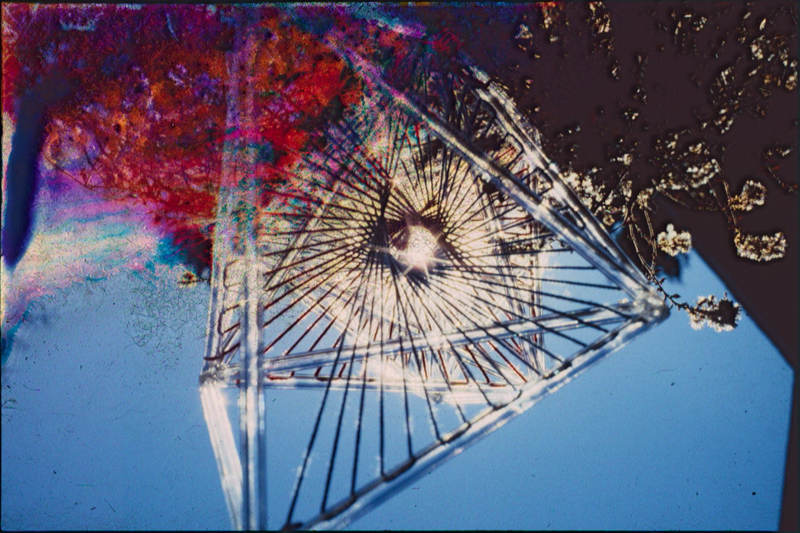
Twin Hypar Fields On Axis with Sun
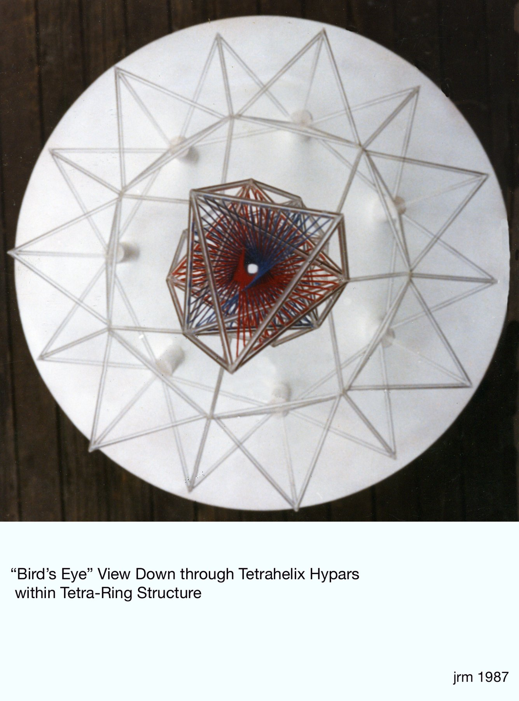
7-Fold Geometry of Tetra Torus
(Before fabricating the Moebius Plasma Induction Ring Wave - Shown Below Yellow)
Overhead view of TetraWave Hypars in Static Tetrahelix Frame centered within an Alternating Tetra-helical Toroidal Ring
14 Regular & 14 Irregular Tetrahedrons
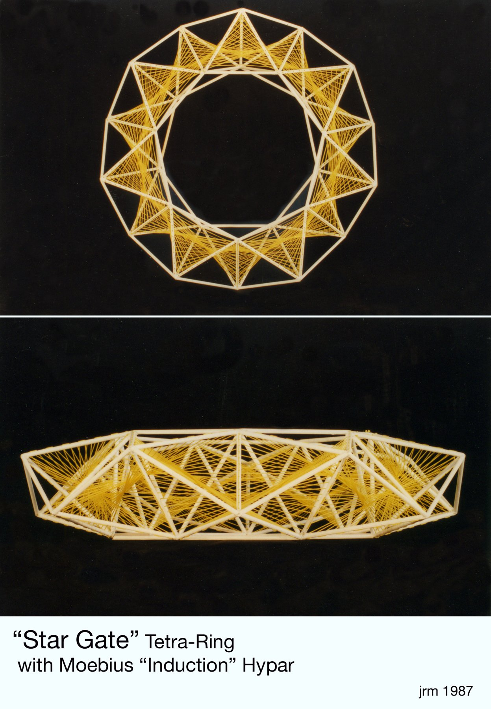
Tetra-Toroidal Moebius Plasma Induction Ring
7-fold Geometry - 28 Tetrahedrons - 14 Regular Inward-Facing, 14 Irregular Outward Facing
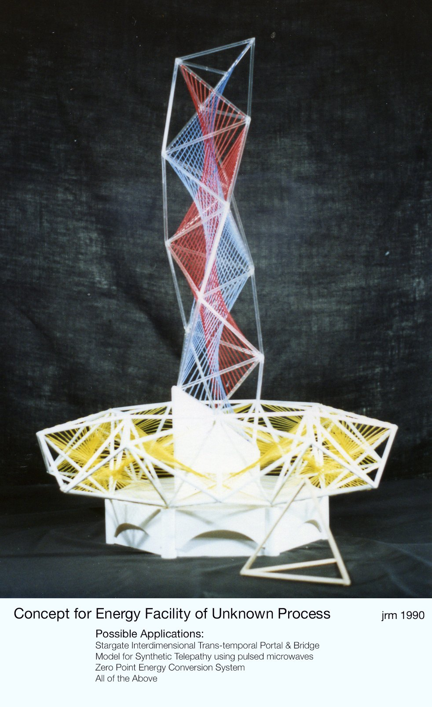
"Cosmic Fire"
Osaka Design Competition - 1990
Facility of Unknown Process
Possibilities:
- StarGate Inter-dimensional Trans-temporal Portal & Bridge
-DNA Formative & Resonant Coding/Transcription Structure
-Zero-Point Energy Tap & Conversion System
-Natural or Synthetic Telepathy System
- Birkeland Current
-Planck Scale "Worm-Hole"
...All of the Above
and/or...
A Cosmic Scale/Planck Scale "Black Hole"?
(as Plasmoid or Plasma Toroidal Induction Ring)
April 10th 2018
Announcement of 1st image of A "Black Hole" ?
From The Event Horizon Telescope
Avery Broderick of Perimeter Institute - Supported by National Science Foundation
Black Hole?
or
Plasma Toroid!
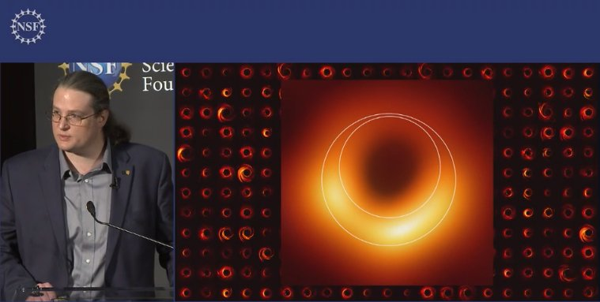
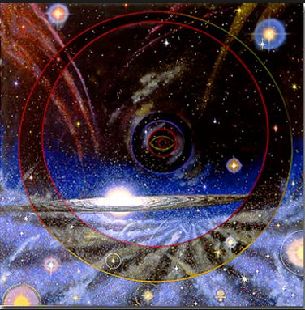
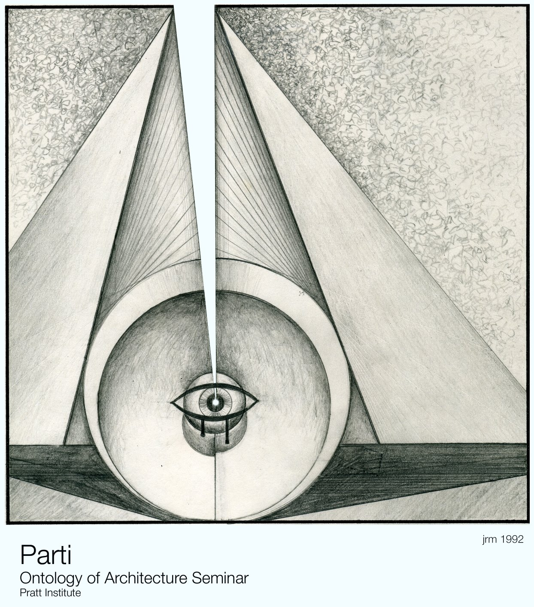
Universal Intelligence
Smithsonian Gallery
Painting by Ingo Swann
Creative Intelligence
Featuring Egyptian Glyph for the 2/3 Fraction of UNITY
Drawing by Joseph Matto
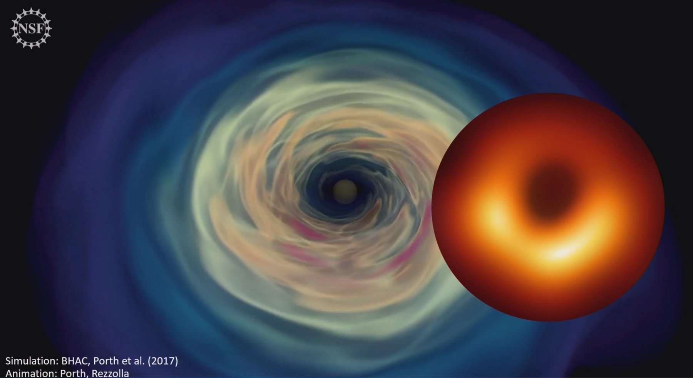
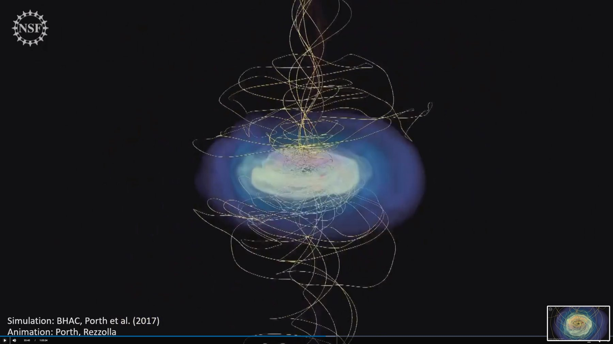
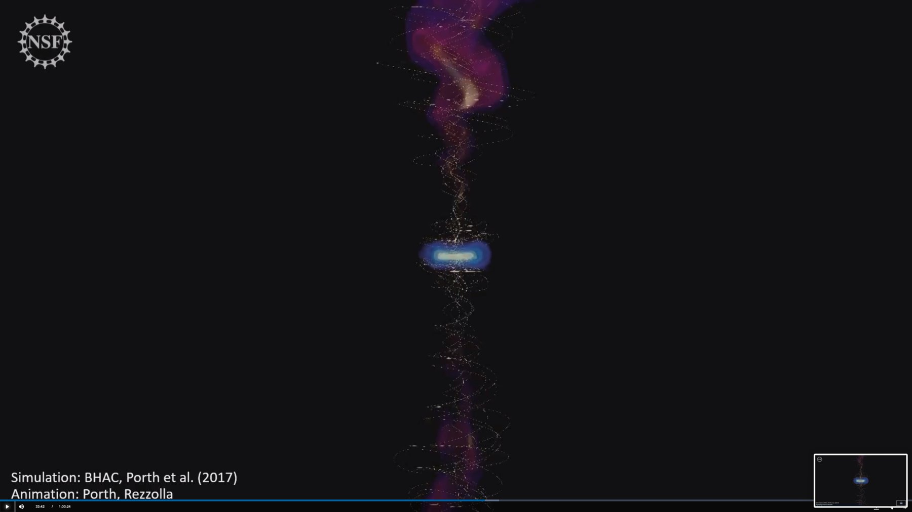
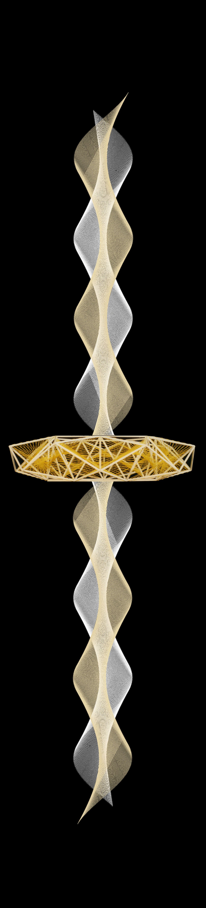
Simulated
Conceptualization
Black Hole Accretion Code
Intuited
Conceptualization
Hypar Toroidal Plasma Ring
&
Twin Hypar Field Tetra-Waveform
as Double Wall Electric Jets
Joseph Matto 1987-1990
(Physical Model Photo-altered
to Express Flare Extension & Symmetry - 2019)
BHAC, Porth et al. (2017)
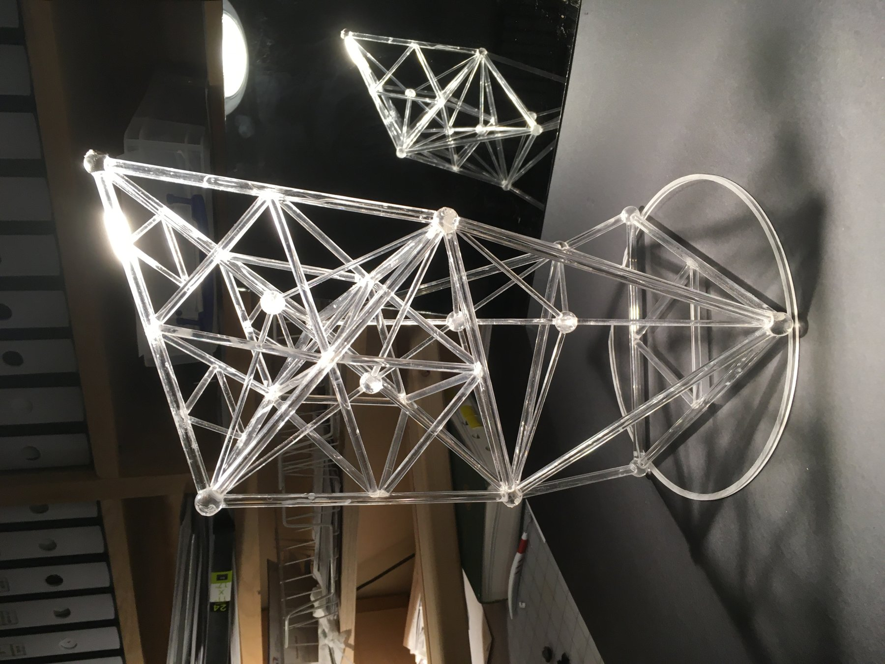
Fractal Tetrahelix Framework
for infinitely nested Tetrawaves of Living Data Structures
All Cores Connected via Resonance
1 to 2 to 4 Frequency subdivisions of 4 a TOT Tetrahelix
showing centroids and TOT axis thru each pair.
Transition from flat triangle within circle to TOTs is accomplished by varying strut lengths sequentially by exactly 1/3 and then 2/3 of edge length of one tetrahedron.
The cylinder that encloses the Tetrahelix/Tetrawave (T/T) is exactly 10% smaller than the originating circle and its axis is eccentrically offset from the originating circle by 1/10th.
The cross section of the T/T can be mapped perfectly onto an 11x11 Grid
inclusive of the originating circle in 2D.
(See section 7 - )
The same grid within the perimeter of the cylinder (the envelope of the Tetrawave) is a 9x9 subset grid of the original 11:11 grid. The 9x9 grid rotates around, and tangentially circumvents and defines the T/T core, within which another T/T can be imagined nesting inwardly in an infinite regress.
Inversely the T/T can be expanded outwardly in an infinite expansion.
I suspect the mathematics of this matrix can be correlated to the brilliant work of
Robert Grant and his theory of the Etymology of Number.
It is my belief The Tetrawave is the central living bio-data structure of all the universe.
The internal twin hypar fields when they pass thru either the upper gate (Crown Chakra) or lower gate (Root Chakra) will then extend out and around mapping onto a torus.
In this way the entire toroidal energy form with the TetraWave core
Becomes as it were, a single instance of consciousness.
This same structure is implied in the structure of the solar system with Birkeland currents connecting planets to the sun and then the sun at the center extends out and around mapping onto the heliopause, which has been shown to have a double field boundary.
Each field of the double field boundary mapped on the torus is the same twin or double field hypars within Tetrawave. In this way we have a Universe of Pearls all connected with a divine essence at the core.
Special word of Thanks and Gratitude to my beloved Prof. Haresh Lalvani
at the Advanced Morphology Lab at PRATT Institute, Brooklyn, NY.
- Prof. Lalvani was a student of Buckminster Fullers while at UPenn.
Holoscience
Wal Thornhill
Becoming Boreallis
David Johnson
Safire Project
Safire Team
Scholars, Scientists, Researchers, Writers, Healers, Mystics & Charlatans...
Just a very few of the many who have inspired, influenced or affirmed my work over the past 34 years, and the personal journey of awakening, evolution and transformation that is...
the Privilege and Destiny of Spiritual Beings on Human Journey.
Related Links of cutting edge researchers, people/projects of Interest.
Alan Green
Peter Thompkins - Mystery of the Pyramids
Ingo Swann
Buckminster Fuller - Synergetics, TetraScrolls, more
Dr. Hal Puthoff
Rupert Sheldrake - Morphogenetic Fields
Dr. Russell Targ -
Jill Purce - Morphogenetic Fields
Paul Smith - Remote View Instructional Services
Joseph Campbell - The inner Reaches of Outer Space
Dr. Dean Radin - Chief Scientist IONS
John Michelle - The Dimensions of Paradise
Julia Mossbridge
Marty Rosenblatt - Applied Precognition Project
Robert Lawlor - Sacred Geometry &
Geometry at The End of Time
Jeffrey Mishlove - New Thinking Allowed
Keith Critchlow - Time Stands Sill & Order in Space
Michael Schneider - Egyptian Mathematics
Richard Dolan - UFOs for the 21'st Mind
Laird Scranton - In search of the Primordial
Eric Von Daniken - Chariots of the Gods
Robert & Philip Bauval - The Orion Mystery
Ancient Aliens - Giorgio Tsoukalis
Russell Carlson - Sacred Geometry International
Megalitho-Mania - Hugh Newman
Christopher Dunn - The Giza Power Plant
Graham Hancock - Fingerprints of the Gods
Alexander Graham Bell
Robert Schoch - Fingerprints of the Gods
Robert Gray -
David Bohm
Roger Penrose
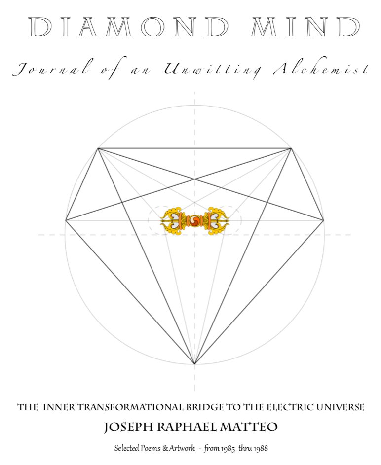
"TOT Pair Footprint"
Vajra shown Centroid to Centroid